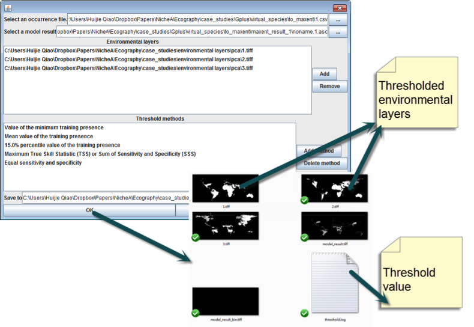

Threshold calculator
Estimate the threshold based on an ENM’s result and the occurrence points used to generate the result. The following methods can be employed:
The thresholded value and environmental layers are saved in the result folder marked by the order of methods (Fig. 1).
NicheA generates a series of distribution maps for each environmental variable based on the threshold selected. For example, if used selects minimum training presence as threshold and one of the variables is mean annual temperature, NicheA will generate a GeoTIFF fiel of the the suitable areas of temperature, based on the temperature where a minimum training presence is found.
Figure 1. ‘Threshold calculator’ method and its result.
